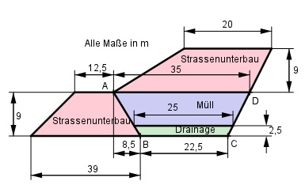

Aufgabe 141 Auf dem dargestellen 1 km langen Straßenabschnitt soll Müll verbaut werden. Wie viel m3 kann man unterbringen? Wie viel m3 Straßenunterbau sind es? Entlang der Linie A-B-C-D soll als Schutz für den Boden Folie verlegt werden. Wie viel m2 braucht man?

Der Müll ist in einem trapezförmigen Prisma verbaut. 1 km = 1 000 m 25 m + 35 m VMüll = --------------- * (9 m - 2,5 m) * 1 000 m = 2 = 195 000 m3 Der Straßenunterbau sind zwei trapezfürmige Prismen. 39 m + 12,5 m VUnterbau = (---------------- * 9m + 2 35 m + 20 m + ------------- * 9m) * * 1 000 m = 2 VUnterbau = (231,75 m2 + 247,5 m2) * 1 000 m = 479 250 m3 Länge der Folie = A - B - C - D Satz von Pythagoras im Dreieck ABF: AB2 = AF2 + BF2 AF = 8,5 m BF = 9 m AB2 = 8,52 m2 + 92 m2 = 153,25 m2 |√ AB = 12,4 m Satz von Pythagoras im Dreieck CDE: CD2 = CE2 + DE2 CE = 9 m DE = 35 m - 22,5 m - 8,5 m = 4 m CD2 = 92 m2 + 42 m2 = 97 m2 |√ CD = 9,85 m AFolie = (12,4 m + 22,5 m + 9,85 m) * 1 000 m = 44 750 m2